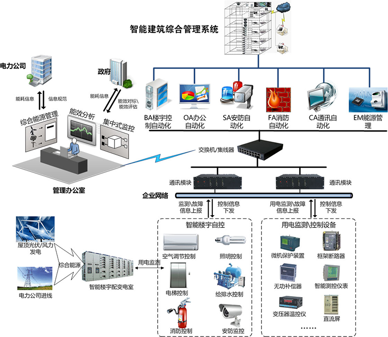

智能建筑综合管理系统
基本介绍
建筑智能化系统，过去通常称弱电系统，是指以建筑为平台，兼备建筑设备、办公自动化及通信网络三大系统，集结构、系统、服务、管理及它们之间最优化组合，向人们提供一个安全、高效、舒适、便利的综合服务环境。
建筑智能化系统，利用现代通信技术、信息技术、计算机网络技术、监控技术等，通过对建筑和建筑设备的自动检测与优化控制、信息资源的优化管理，实现对建筑物的智能控制与管理，以满足用户对建筑物的监控、管理和信息共享的需求，从而使智能建筑具有安全、舒适、高效和环保的特点，达到投资合理、适应信息社会需要的目标。

系统介绍
采用虚拟化桌面镜像技术，企业内部所有应用程序无需做手机适配，便可无缝发布到手机上操作，节省开发成本。私有云存储，利用手机、平板电脑可以随时和企业内部资源交互，实现随时随地上传下载。
1.通信网络系统
通信网络系统(CNS：Communication Network System)是在建筑或建筑群内传输语音、数据、图像且与外部网络(如公用电话网、综合业务数字网、因特网、数据通信网络和卫星通信网等)相联结的系统，主要包括通信系统、卫星数字电视及有线电视系统、公共广播及紧急广播系统等各子系统及相关设施，其中通信系统包括电话交换系统、会议电视系统及接人网设备。
2.信息网络系统
信息网络系统(INS ：Information Network System) 是应用计算机技术、通信技术、多媒体技术、信息安全技术和行为科学等，由相关设备构成，用以实现信息传递、信息处理、信息共享，并在此基础上开展各种业务的系统，主要包括计算机网络、应用软件及网络安全等。
3.建筑设备监控系统
建筑设备监控系统(BAS：Building Automation System)，过去通常称楼宇自动化系统，是将建筑或建筑群内的空调与通风、变配电、公共照明、给排水、热源与热交换、冷冻与冷却、电梯等设备或系统集中监视、控制和管理而构成的综合系统，其监控范围为空调与通风系统、变配电系统、公共照明系统、给排水系统、热源和热交换系统、冷冻和冷却水系统、电梯和自动扶梯系统等各子系统。
4.火灾自动报警及消防联动系统
火灾报警系统，一般由火灾探测器、区域报警器和集中报警器组成，当火灾报警系统根据工程的要求同各种灭火设施和通讯装置联动，形成中心控制系统，即由自动报警、自动灭火、安全疏散诱导、系统过程显示、消防档案管理等组成一个完整的消防控制系统时，被称为火灾自动报警及消防联动系统（FAS：Fire Alarm System），主要包括火灾和可燃气体探测系统，火灾报警控制系统，消防联动系统等各子系统及相关设施
5.安全防范系统
安全防范系统(SAS：Safety Automation System)是以维护公共安全、预防刑事犯罪和灾害事故为目的，运用电子信息技术、计算机网络技术、系统集成技术和各种现代安全防范技术构成的入侵报警系统、视频监控系统、出入口控制系统等，或这些系统组合或集成的电子系统或网络，主要包括入侵报警系统、视频监控系统、出入口控制系统、停车库管理系统、巡更系统等。
6.综合布线系统
综合布线系统（PDS：Premises Distributed System）是建筑或建筑群内部及其与外部的传输网络。它使建筑或建筑群内部的语音、数据和图像通信网络设备、信息网络交换设备和建筑设备自动化系统等相联，也使建筑或建筑群内通信网络与外部通信网络相联。
7.智能化系统集成
智能化系统集(ISI ：Intelligent System Integrated)成一般指在建筑设备监控系统、火灾自动报警和消防联动系统、安全防范系统等的基础上，实现建筑管理系统(SMS)的集成，以满足建筑监控功能、管理功能和信息共享的需求。通过对建筑和建筑设备的自动检测与优化控制、信息资源的优化管理，为使用者提供最佳的信息服务，使智能建筑适应信息社会的需要，并具有安全、舒适、高效和经济的特点。
2015 © 河南祯祥智能工程有限公司. ALL Rights Reserved.